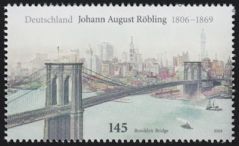

Johann August Röbling

Johann August Röbling, a German-American engineer, was born in Mühlhausen, Thuringia, in 1806. After attending a training institute in Erfurt, he moved to Berlin to study structural engineering. Roebling stayed in the Sauerland until 1928. In August 1831, Roebling emigrated to America.
Together with friends and acquaintances from Mühlhausen he founded the community Germania (today Sachsenburg) in Pennsylvania. When he received his naturalization certificate in 1837, Johann August changed his name to John A. Roebling.
In 1844 he began building the first bridges such as the Smithfield Street Bridge in Pittsburgh and the Niagara Falls Suspension Bridge over the Niagara River. Its largest and most famous structure, however, was the Brooklyn Bridge in New York. In 1865 Roebling began his planning, which was interrupted by an accident while surveying construction work. As a result, he died on July 22, 1869 of complications from a tetanus infection.
His son Washington and his wife then took care of the completion of the bridge. For his 200th birthday, a special postage stamp was issued in his honor in Germany.